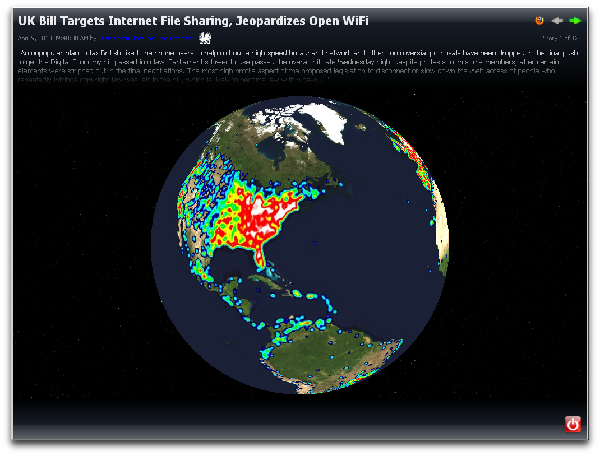

Resound
Resound shows Team Cymru's malevolence map on an interactive globe
and aggregates Team Cymru's news and twitter feeds.

Resound heavily modifies many basic Qt widgets in order to achieve a great visual
experience. Text fades when stories switch and article descriptions appear to come
from outer space.
Tools
- InnoSetup
- Visual Studio 9
- Qt Creator
- Visual Leak Detector